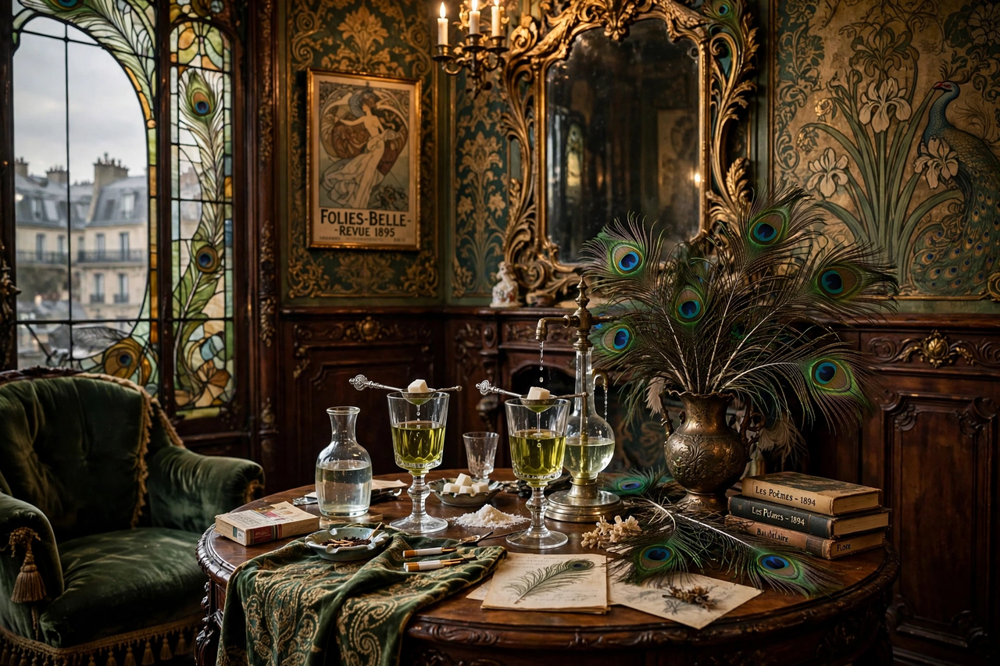

| Years active | c. 1860s–1900s (fin de siècle) |
|---|---|
| Country | France, England, and across Europe |
| Major figures | Charles Baudelaire, Joris-Karl Huysmans, Oscar Wilde, Arthur Symons, Aubrey Beardsley |
| Influences | Romanticism, Symbolism, Aestheticism |
| Key text | À rebours (1884) by Huysmans |
The Decadent movement (from the French décadence, "decay") was a late-19th-century artistic and literary movement, centred in Western Europe, that followed an aesthetic ideology of excess and artificiality. The Decadents prized refined sensation, perversity, and artifice over nature and moral convention, adopting a term first applied to them by hostile critics and wearing it as a badge of honour.
The movement's roots lie in Charles Baudelaire's Les Fleurs du mal (1857) and the essays of Théophile Gautier, who championed art for art's sake. In England, Walter Pater's writings on the Renaissance provided an intellectual foundation, and his Oxford circle — above all Oscar Wilde — carried Decadent ideas into English letters. Algernon Charles Swinburne's lush, transgressive poetry was another bridge between French and English Decadence.
Joris-Karl Huysmans's novel À rebours ("Against Nature", 1884), whose aesthete hero Des Esseintes retreats into a world of curated sensation, became known as the "breviary of the Decadence" and heavily influenced Wilde's The Picture of Dorian Gray (1890). In London the 1890s Decadence found expression in The Yellow Book magazine, Aubrey Beardsley's illustrations, and the poems of Ernest Dowson and Arthur Symons, who introduced the movement to English readers in his 1893 essay "The Decadent Movement in Literature".
Wilde's trials in 1895 discredited English Decadence almost overnight, and the movement dissolved into Symbolism, Art Nouveau, and early modernism. Its legacy persists in modernist literature, in the aesthetics of dandyism and camp, and in recurring cultural fascination with the fin de siècle.